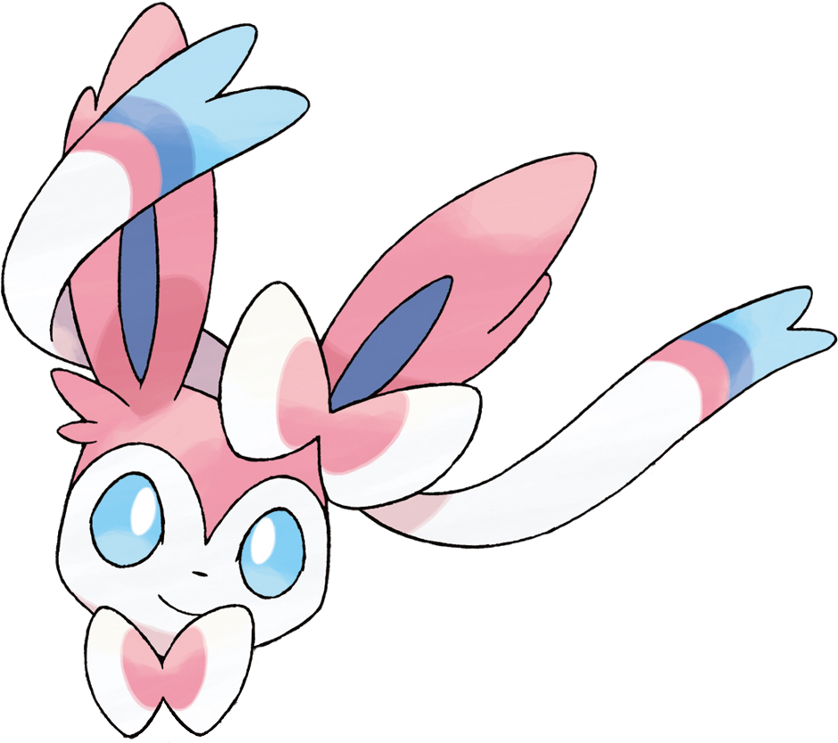

 Sylveon em japonês: ニンフィア Nymphia
TIPO: Fada | FRAQUEZAS: Aço e Toxico
Este Pokemon usa seus sensores em forma de fita para enviar uma aura calmante para seus oponentes, apagando sua hostilidade. Sylveon tem uma figura elegante enquanto dança levemente ao redor, as antenas vibrando, mas seus movimentos penetrantes apontam direto para os pontos fracos de seus oponentes.
Biologia
Sylveon é um Pokémon mamífero coberto principalmente em pele de cor creme pálido, com os pés rosados, orelhas e cauda. Há dois arco e adornos lenço sobre eles, um no pescoço e um na orelha esquerda. Os arcos são creme claro com centros rosadas, enquanto os lenços são creme claro com dicas rosado e azul. Eles têm quatro pernas curtas de três dedos visíveis em cada pé, seus olhos são azuis.
* Ele envia uma aura calmante com suas orelhas.
* Sylveon é o Pokémon mais leve entre as Eeveelutions.
* Sylveon foi um dos primeiros Pokémon a ter o tipo Fairy (Fada).